第24章：下载数据¶
大多数应用程序以某种方式访问互联网，下载数据来显示或保持用户产生的数据在设备间同步。你的RWFreeView应用程序需要创建和发送HTTP请求，并处理HTTP响应。下载的数据通常是JSON格式的，你的应用程序需要将其解码为自己的数据模型。
如果你的应用程序从你自己的服务器上下载数据，你也许能够确保JSON结构与你的应用程序的数据模型相匹配。但是RWFreeView需要与raywenderlich.com的API和它的JSON结构一起工作，它是深度嵌套的。所以在本章中，你将学习两种处理嵌套JSON的方法。
开始¶
打开启动器文件夹中的Networking playground，并打开Episode playground页面。如果编辑器窗口是空白的，显示项目导航器（Command-1）并在那里选择Episode。
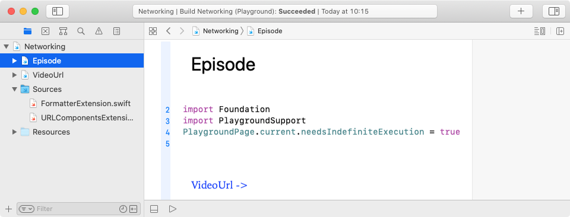
Playground对于在将代码移入你的应用程序之前进行探索和研究是非常有用的。你可以快速检查由方法和操作产生的值，而不需要建立一个用户界面或搜索大量的调试控制台信息。
起步阶段的Playground包含两个Playground页面以及对DateFormatter和URLComponents的扩展。
异步函数¶
URLSession是苹果的HTTP消息框架。它的大部分方法都涉及到网络通信，所以你无法预测它们需要多长时间来完成。在此期间，系统必须继续与用户互动。
为了实现这一点，URLSession方法是异步的：它们将工作分派到另一个队列，并立即将控制权返回给主队列，这样它就可以对用户界面事件做出反应。当你调用该方法时，你提供一个完成处理程序。这个处理程序在网络任务完成时运行，以处理来自服务器的响应。
Note
URLSession和更广泛的并发主题有自己的视频课程，在bit.ly/3x6Z8hN，也有一本书，《教程中的并发》，在bit.ly/3n0BSgF。
因为异步任务看起来是立即完成的，所以Episode和VideoURL Playground页面包含以下代码，这样Playground就不会在异步任务完成之前停止执行：
import PlaygroundSupport
PlaygroundPage.current.needsIndefiniteExecution = true
创建一个REST请求¶
一个REST请求是一个带有查询参数的URL。在上一章中，你看到了一个典型的contents查询的URL编码：
https://api.raywenderlich.com/api/contents?filter%5Bsubscription_types%5D%5B%5D=free&filter%5Bdomain_ids%5D%5B%5D=1&filter%5Bcontent_types%5D%5B%5D=episode&sort=-popularity
这个URL在?分隔符后列出了查询参数名称和值。
在这个Playground上，你将为免费的iOS和Swift剧集创建这个REST请求，按流行程度排序。你的方法将是灵活的，所以你可以轻松地改变查询参数值。
许多查询参数名称，如filter[domain_ids][]包含括号，必须将其URL编码为%5B和%5D。你需要在你的应用程序中创建这样的URL，而且你肯定不想自己做URL编码！幸运的是，你可以把这项工作交给你的应用程序。幸运的是，你可以把这项工作交给URLComponents和URLQueryItem。
URLComponents¶
URLComponents结构使你能够从URL的各个部分构建一个URL，同时也能够访问URL的各个部分。组件包括scheme, host, port, path, query 和 queryItems。url本身可以让你访问URL组件，如lastPathComponent。
➤ 将这段代码添加到Episode playground中：
let baseURLString = "https://api.raywenderlich.com/api/"
var urlComponents = URLComponents(
string: baseURLString + "contents/")!
urlComponents.queryItems = [
URLQueryItem(
name: "filter[subscription_types][]", value: "free"),
URLQueryItem(
name: "filter[content_types][]", value: "episode")
]
urlComponents.url
urlComponents.url?.absoluteString
你为API的基本端点设置URL字符串，并添加contents端点，以创建一个URLComponents实例。然后，你创建一个URLQueryItem值数组。URLQueryItem参数是你在前一章用来构建REST请求的参数名称和值。
最后一行显示侧边栏中的最终URL字符串。上面那行显示的是最终的URL。有什么不同呢？是时候找出答案了!
Note
在Playground中，可以将表达式写在自己的行中，以显示其值。
➤ 单击最后一行编号或Playground底部的执行Playground箭头：
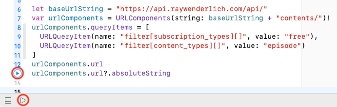
Note
点击某行代码旁边的箭头，只运行到该行的游戏。
侧边栏显示一些行的数值，并有快速查看和显示结果的按钮。
➤ 单击最后一行代码的显示结果按钮，调整出现在该代码行下面的显示窗口的大小：
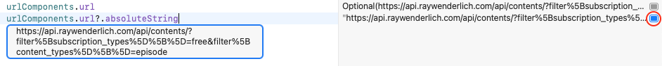
"https://api.raywenderlich.com/api/contents/?filter%5Bsubscription_types%5D%5B%5D=free&filter%5Bcontent_types%5D%5B%5D=episode"
由于urlComponents，你的查询被安全地进行了URL编码并附加到基本的URL中。
现在看看上面那行的url。注意它没有加引号，因为它不是一个String。事实上，它是一个Optional。点击它的显示结果按钮：
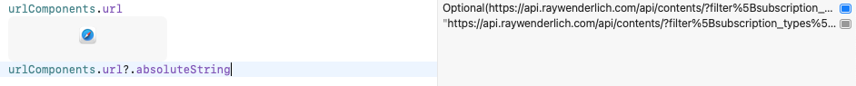
Playground会尽力打开该URL。
你可以从一个String创建一个URL，如果String有所有正确的部分。然后，你可以访问这些部分作为URL实例的属性：host、baseURL、path、lastPathComponent、query等等。
如果你试图从一个在浏览器中无法使用的String中创建一个URL，初始化器会返回nil。这就是为什么urlComponents.url是一个选项，并且在最后一行代码中有一个url?。如果url是nil，它就没有absoluteString属性。
➤ 点击它们的隐藏结果按钮来关闭结果窗口。
Note
你也可以使用print(urlComponents.url?.absolutString)在下面的调试区看到打印的值。如果不能看到调试区，请点击运行/停止按钮旁边的按钮或按Shift-Command-C。
URLComponents帮助方法¶
URLQueryItem使得在请求URL中添加查询参数名称和值变得很容易，但是你的应用程序为用户提供了很多选项来定制下载内容。而且几乎每一个选择和取消选择都需要一个新的请求。你将会写很多代码来添加查询项。
URLQueryItem的name和value参数看起来像字典中的key和value项，所以很容易创建一个参数名称和值的字典，然后将这个字典转化为queryItems数组。尤其是Alfian Losari已经在bit.ly/3pRtT6t中做到了这一点。 :] 它在Networking/Source/URLComponentsExtension.swift这个Playground上。
➤ 将urlComponents.queryItems定义替换为：
var baseParams = [
"filter[subscription_types][]": "free",
"filter[content_types][]": "episode",
"sort": "-popularity",
"page[size]": "20",
"filter[q]": ""
]
urlComponents.setQueryItems(with: baseParams)
你创建一个字典，其键是查询参数名称。前两个是固定的：你总是想下载免费的剧集。
你包括排序、页面大小和q（搜索词），因为这些是单值选项。它们有默认值，而这个字典可以让你轻松地改变它们的值。比如说：
// when user changes page size
baseParams["page[size]"] = "30"
// when user enters a search term
baseParams["filter[q]"] = "json"
URLComponents扩展中定义的setQueryItems(with:)辅助方法为每个字典项目创建一个URLQueryItem，并设置URLComponents实例的queryItems数组。在下一章中，你将向这个数组追加其他查询项。
➤ 用这一行替换urlComponents.url：
urlComponents.queryItems! +=
[URLQueryItem(name: "filter[domain_ids][]", value: "1")]
你只请求"iOS & Swift"域中的情节。
你不在baseParams中包含这个查询参数，因为你可以在一个RESTED请求的URL中添加一个以上的domain_id查询项。
queryItems数组是一个可选项，以防urlComponents没有任何queryItems组件。但是，你刚刚创建了queryItems组件，所以强行解包是安全的。
➤ 执行Playground并显示absoluteString的结果：
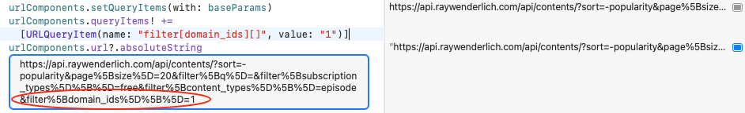
现在你已经准备好向raywenderlich.com的API服务器发送请求URL了。
URLSessionDataTask¶
➤ 在absoluteString行下面添加这段代码：
let contentsURL = urlComponents.url! // 1
// 2
URLSession.shared
.dataTask(with: contentsURL) { data, response, error in
defer { PlaygroundPage.current.finishExecution() } // 3
if let data = data,
let response = response as? HTTPURLResponse { // 4
print(response.statusCode)
// Decode data and display it
}
// 5
print(
"Contents fetch failed: " +
"\(error?.localizedDescription ?? "Unknown error")")
}
.resume() // 6
- 你把
urlComponents的url属性分配给contentsURL。在这个Playground上，你知道这是一个有效的URL，所以强制解包是安全的。当这段代码在一个方法中时，你会在一个guard语句中做这个赋值，如果值是nil就退出。 - 你用
contentsURL创建了一个dataTask。对于像这样的简单请求，默认配置的shared会话可以正常工作。你可以创建一个自定义配置的会话。例如，以下是你如何创建一个等待300秒的网络连接的会话：
let config = URLSessionConfiguration.default
config.waitsForConnectivity = true
config.timeoutIntervalForResource = 300
let session = URLSession(configuration: config)
- 当
dataTask处理程序完成时，defer语句会停止Playground的执行。当代码是在一个Playground页面中最后执行的时候，这很方便。 - 你提供一个完成处理程序。当任务完成时，这个处理程序收到三个参数。你通常把它们命名为
data,response和error。这三个参数都是选项，所以你必须把它们拆开。完成处理程序通常检查response.statusCode然后解码data。 - 你打印
error，如果它存在的话，或者打印“Unknown error”.。一个常见的“Unknown error”.的来源是对data解码失败。 URLSession任务是在暂停状态下创建的，所以你必须调用resume()方法来启动它们。这一步很容易忘记，即使是有经验的iOS开发者也是如此。］
在你打印状态代码后，那个解码数据并显示它的注释怎么办？本章剩下的大部分内容都能帮助你做到这一点。如果你现在运行这段代码，你会得到“Unknown error”.，因为你还没有对data进行解码。
获取一个视频URL¶
为了显示一个视频，你实际上需要运行两个下载请求。你刚刚添加到Episode playground的那个请求获取了一个contents项目的数组。
其中一个contents项目的属性是video_identifier。它是一个整数，如3021。你将使用它来获取项目的视频的URL字符串。
➤ 在VideoURL Playground页中，添加这几行代码：
let videoId = 3021
let baseURLString = "https://api.raywenderlich.com/api/videos/"
let queryURLString = baseURLString + String(videoId) + "/stream"
let queryURL = URL(string: queryURLString)!
URLSession.shared
.dataTask(with: queryURL) { data, response, error in
defer { PlaygroundPage.current.finishExecution() }
if let data = data,
let response = response as? HTTPURLResponse {
print("\(videoId) \(response.statusCode)")
// Decode response and display it
}
print(
"Videos fetch failed: " +
"\(error?.localizedDescription ?? "Unknown error")")
}
.resume()
你创建查询URL和dataTask代码来发送它，然后打印响应状态代码。然后，你需要"解码响应并显示它"。
这个查询的JSON响应比contents查询要简单，所以你要先对其进行解码。
解码JSON¶
如果你的数据模型和JSON值之间有很好的匹配，那么JSONDecoder的默认init(from:)就是诗意的运动，让你在一行代码中解码数组和字典的复杂结构。不幸的是，api.raywenderlich.com发送了一个深度嵌套的JSON结构，你可能不想在你的应用程序中复制。所以，现在是时候了解更多关于CodingKey枚举和自定义init(from:)方法了。
Note
通过我们的教程《Swift中的编码和解码》深入了解JSONbit.ly/3bqsrBY。
解码JSON，（几乎）符合你的数据模型¶
在第19章"保存文件"中，你看到将Team结构编码和解码为JSON是多么容易，因为它的所有属性都是Codable的。你正在保存和加载你的应用程序自己的数据模型，所以JSON格式的项目名称和结构与你的Team结构完全匹配。
由现实世界的API发送的JSON值很少与你想命名或结构你的应用程序的数据的方式相匹配。
如果JSON结构与你的应用程序的数据模型相匹配，但JSON名称使用snake_case，而你的属性名称使用camelCase，你只需告诉解码器进行翻译：
let decoder = JSONDecoder()
decoder.keyDecodingStrategy = .convertFromSnakeCase
这负责将JSON名称如released_at和video_identifier翻译成属性名称releasedAt和videoIdentifier。
如果JSON结构与你的应用程序的数据模型相匹配，但一些名称是不同的，你只需要定义一个CodingKey枚举，将JSON项目名称分配给你的数据模型属性。例如，Episode有一个description属性，但匹配的JSON项目的名称是description_plain_text：
enum CodingKeys: String, CodingKey {
case description = "description_plain_text"
case id, uri, name, ...
}
不幸的是，只要你为一个属性名称创建一个CodingKey枚举，你就必须包括所有的属性名称，甚至那些已经匹配JSON项目名称的属性。
解读嵌套的JSON¶
大多数时候，API发送的JSON结构与你想组织你的应用程序的数据的方式非常不同。api.raywenderlich.com就是这种情况，你想存储在episode中的值被嵌套在JSON值中的一个或多个层次。而获取视频的URL字符串需要单独请求一个不同的端点。
即使是videos请求也有这个问题。你想要的只是url值，但它被埋在一个嵌套的JSON结构中。
➤ 用RESTed发送此请求，或使用raywenderlich.docs.apiary.io的/videos/{video_id}/stream端点的尝试控制台。
https://api.raywenderlich.com/api/videos/3021/stream
你会得到这个响应体：
{
"data": {
"id": "32574",
"type": "attachments",
"attributes": {
"url": "https://player.vimeo.com/external/357115704...",
"kind": "stream"
}
}
}
JSON值包含一个名为"data"的字典。它的"attributes"键的值是另一个字典，而"url"键的值是你想存储在Episode实例中的URL字符串。
有两种方法可以对嵌套的JSON进行解码：
- 定义你的数据模型来反映
JSON值。 - 将
JSON值扁平化到你的数据模型中。
你会用第一种方法来做，看看自动JSON解码是多么的有趣。然后你会用第二种方法，因为你会在你的应用程序中这样做。作为对更多解码工作的交换，你将得到合理的数据结构，更容易、更自然地工作。
使数据模型适合于JSON¶
➤ 在VideoURL Playground页面中，设置这些结构以反映JSON值的层次结构：
struct ResponseData: Codable {
let data: Video
}
struct Video: Codable {
let attributes: VideoAttributes
}
struct VideoAttributes: Codable {
let url: String
}
你用data, attributes和url属性创建独立的结构。这些结构之间的关系与JSON值的"data"、"attributes"和"url"的嵌套一致。
➤ 在queryURL dataTask的完成处理程序中，用此代码替换"解码响应并显示"注释：
if let decodedResponse = try? JSONDecoder().decode( // 1
ResponseData.self, from: data) { // 2
DispatchQueue.main.async {
print(decodedResponse.data.attributes.url) // 3
}
return
}
- 你不需要为这个任务配置
JSONDecoder，所以你只需在内联创建一个。 - 你对顶层的
ResponseData进行解码，这样你就可以访问它的data.attributes.url属性。 - 在主队列上运行
print语句。这在Playground中并不是真正必要的，但在应用程序中是必不可少的。你通常在dataTask处理程序中做一些事情来更新用户界面，而所有的UI更新都必须在主队列中运行。
➤ 运行Playground：
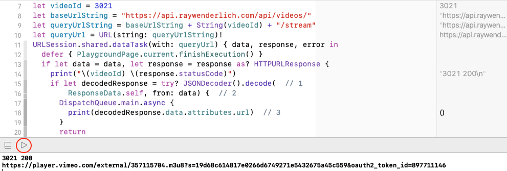
URL字符串出现在调试区，Playground执行停止。
Note
如果你在URLSession代码下面添加了ResponseData和其他结构，你必须运行整个Playground。如果你点击resume()行上的运行按钮，它们是不"可见"的。
➤ 选项点击url：

它的类型是String，正如你所期望的那样。
➤ 在VideoAttributes中，改变url的类型：
let url: URL
➤ 再次运行Playground，然后检查url的类型：
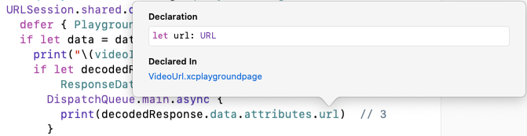
这是一个巧妙的JSONDecoder自动技巧之一。它从JSON字符串值中创建了一个URL。
当你需要在你的应用程序中使用url时，这种方法的缺点就出现了。你并不希望为每个视频创建一个ResponseData实例。把它作为Episode的属性之一会更自然。
扁平化JSON响应到数据模型中¶
在第19章"保存文件"中，你写了一个CodingKey枚举和一个自定义的init(from:)来解码一个Double值，然后用来初始化一个Angle。在这一节中，你将使用CodingKey枚举和自定义的init(from:)来浏览JSON值的各个层次并提取你需要的项目。
这里又是JSON值：
{
"data": {
"id": "32574",
"type": "attachments",
"attributes": {
"url": "https://player.vimeo.com/external/357115704...",
"kind": "stream"
}
}
}
把"data"看成是顶级容器里面的一个容器。
➤ 注释掉ResponseData、Video和VideoAttributes结构，然后添加这段代码：
struct VideoURLString {
// data: attributes: url
var urlString: String
enum CodingKeys: CodingKey {
case data
}
enum DataKeys: CodingKey {
case attributes
}
}
struct VideoAttributes: Codable {
var url: String
}
这一次，你在为顶层和"data"容器创建的CodingKey枚举中反映了JSON的层次结构。这些情况是你所关心的JSON键。顶层容器中的"data"和 "data"容器中的"attributes"。
然后，你创建一个结构来保存你关心的"attributes"项目：url。
为了使JSON结构扁平化以适应你的数据模型，你必须编写你自己的初始化器。
➤ 在VideoURLAttributes下面添加这段代码：
extension VideoURLString: Decodable {
init(from decoder: Decoder) throws {
let container = try decoder.container( // 1
keyedBy: CodingKeys.self)
let dataContainer = try container.nestedContainer(
keyedBy: DataKeys.self, forKey: .data) // 2
let attr = try dataContainer.decode(
VideoAttributes.self, forKey: .attributes) // 3
urlString = attr.url // 4
}
}
Note
你总是把这个解码初始化器放在一个扩展中。如果你把它放在主VideoURLString结构中，你会失去Swift为结构创建的默认初始化器。
你深入到JSON值中，使用编码键来创建容器并访问其内容。
- 首先，你得到顶级容器。在
CodingKeys中的case data与这个顶级容器中的东西匹配。 - 接下来，你抓取嵌套的容器，与
CodingKeys中的case data相匹配。DataKeys中的case attributes与dataContainer中的内容相匹配。 - 然后，你对
dataContainer中的attributes项进行解码，将其映射到VideoAttributes结构。所以attr是VideoAttributes的一个实例。 - 最后，你到达了
JSON层次结构中的"url"值! 你把它分配给这个VideoURLString实例的顶级urlString属性。
这比在你的数据模型结构中反映JSON层次结构的工作要多，但它有两个优点。
- 你的数据模型结构更扁平，更容易理解。它们与你的应用程序的数据的心理模型相匹配。
- 如果
JSON层次结构改变，你只需要修改CodingKey枚举和你的自定义init(from:)。你不需要重构你的数据模型结构。
➤ 改变JSONDecoder().decode代码以使用VideoURLString：
if let decodedResponse = try? JSONDecoder().decode(
VideoURLString.self, from: data) {
DispatchQueue.main.async {
print(decodedResponse.urlString)
}
return
}
➤ 再次运行Playground以检查它是否仍能解码url：
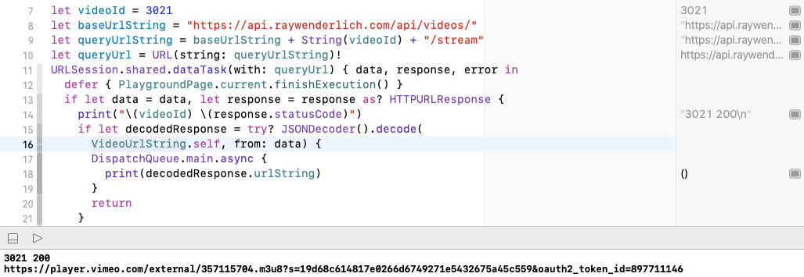
当你把contents的JSON值平铺到Episode结构中时，你会使用这个VideoURLString解码结构。
对contents响应进行解码¶
现在你已经准备好处理contents的查询响应了。下面是返回的一个项目：
{
"data": [
{
"id": "5117655",
"attributes": {
"uri": "rw://betamax/videos/3021",
"name": "SwiftUI vs. UIKit",
"released_at": "2019-09-03T13:00:00.000Z",
"difficulty": "beginner",
"description_plain_text": "Learn about...\n",
"video_identifier": 3021,
...
},
"relationships": {
"domains": {
"data": [
{
"id": "1",
"type": "domains"
}
]
},
...
}
...
},
...
}
顶层的容器是一个字典。它的一个键是"data"，它是一个字典数组。你需要为每个Episode实例存储的大部分数据都在"attributes"值中。
你将使用"video_identifier"值来创建一个VideoURLString对象来获取该集视频的URL字符串。
而剧集的域名（平台）是由"id"在"relationships"值中列出。
还有一个JSONDecoder的技巧¶
你肯定要把这个JSON平铺到你的Episode结构中，但首先，你得看看JSONDecoder能对Date字符串做什么。
➤ 在Episode playground页面，设置一个EpisodeStore结构来存储剧集和一个Episode结构来反映JSON值：
struct EpisodeStore: Decodable {
var episodes: [Episode] = []
enum CodingKeys: String, CodingKey {
case episodes = "data" // array of dictionary
}
}
struct Episode: Decodable, Identifiable {
let id: String
let attributes: Attributes
}
struct Attributes: Codable {
let name: String
let released_at: Date
}
在JSON值中，"released_at"是一个字符串，但你将设置一个JSONDecoder来自动将其转换为Date值。
FormatterExtension.swift包含两个DateFormatter类型的属性：
public extension DateFormatter {
/// Convert /contents released_at String to Date
static let apiDateFormatter: DateFormatter = {
let formatter = DateFormatter()
formatter.dateFormat = "yyyy-MM-dd'T'HH:mm:ss.SSS'Z'"
return formatter
}()
/// Format date to appear in EpisodeView and PlayerView
static let episodeDateFormatter: DateFormatter = {
let formatter = DateFormatter()
formatter.dateFormat = "MMM yyyy"
return formatter
}()
}
apiDateFormatter中的dateFormat是"leased_at"字符串的模板。
Note
这种日期格式是由ISO 8601[bit.ly/3aJJSwR]（https://www.w3.org/QA/Tips/iso-date）定义的国际标准。您可以在bit.ly/3oZTuZu中找到日期格式模式和日期字段符号表。
➤ 在Episode playground页面中，在URLSession代码之前，创建一个JSONDecoder并设置其日期解码策略：
let decoder = JSONDecoder()
decoder.dateDecodingStrategy = .formatted(.apiDateFormatter)
这就是你需要做的，使解码器将"release_at"字符串转换成Date值。之后，你将使用episodeDateFormatter在EpisodeView中显示这个日期的月份和年份。
Note
实际上有一个特定的ISO8601DateFormatter和一个JSON日期解码策略iso8601，但该策略不包括毫秒（SSS），也不让你实例化ISO8601DateFormatter来设置毫秒选项。你也不能使用.formatted来设置一个配置的ISO8601DateFormatter作为decoder的日期格式，因为它不是DateFormatter类型。这些限制只有在你使用编译器为你提供的标准解码时才会有问题。如果你写一个自定义的解码器--你很快就会这样做--你可以直接使用ISO8601DateFormatter。
➤ 在dataTask的完成处理程序中，用这段代码替换"对数据进行解码并显示"的注释：
if let decodedResponse = try? decoder.decode(
EpisodeStore.self, from: data) {
DispatchQueue.main.async {
let date =
decodedResponse.episodes[0].attributes.released_at
DateFormatter.episodeDateFormatter.string(from: date)
}
return
}
你检查由decoder创建的Date值，将其转换为你将在EpisodeView中显示的String。
➤ 运行Playground。
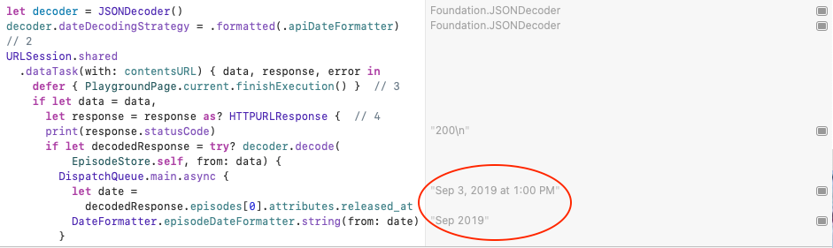
由decoder创建的日期是以默认的中等风格显示，然后episodeDateFormatter显示你将在EpisodeView显示的短字符串。
扁平化的内容响应¶
RWFreeView还需要几个Episode属性，其中一些需要自定义解码器。
➤ 在Episode播放页面中，用所有你需要的属性替换Episode结构的attributes属性：
// flatten attributes container
//1
let uri: String
let name: String
let released: String
let difficulty: String?
let description: String // description_plain_text
// 2
var domain = "" // relationships: domains: data: id
// send request to /videos endpoint with urlString
var videoURL: VideoURL? // 3
// redirects to the real web page
var linkURLString: String { // 4
"https://www.raywenderlich.com/redirect?uri=" + uri
}
- 声明你要从
JSON响应中映射的属性。擷取的項目如果不是集數，就沒有"difficulty"值，所以這是可選的。 - 这些属性大多与
"attributes"容器中的项目相匹配，但域"id"值被嵌套在"relationships"字典的深处。 - 你将创建一个
VideoURL对象，它将发送一个请求来获取urlString。 - 如果你想使用
Link打开浏览器，你从uri计算出linkURLString。
对Episode的大部分属性进行解码¶
Xcode正在抱怨Episode不符合Decodable，因为你没有告诉它这些新的属性将如何取值。马上就来!
➤ 首先，删除Attributes。你要把它平铺到Episode的顶层。
➤ 将这些CodingKey的枚举添加到Episode中：
enum DataKeys: String, CodingKey {
case id
case attributes
case relationships
}
enum AttrsKeys: String, CodingKey {
case uri, name, difficulty
case releasedAt = "released_at"
case description = "description_plain_text"
case videoIdentifier = "video_identifier"
}
struct Domains: Codable {
let data: [[String: String]]
}
enum RelKeys: String, CodingKey {
case domains
}
你为"data"、"attributes"和"relationships"容器创建CodingKey枚举DataKeys、AttrsKeys和RelKeys，并创建一个结构来容纳你关心的"domains"项目。data。
Note
Swift枚举情况下的标识符可以包括下划线字符，但raywenderlich.com代码使用SwiftLint github.com/realm/SwiftLint，它只允许字母和数字。而且convertFromSnakeCase键解码策略只在自动JSON解码时起作用。
➤ 也给Episode增加了这个类型属性：
static let domainDictionary = [
"1": "iOS & Swift",
"2": "Android & Kotlin",
"3": "Unity",
"5": "macOS",
"8": "Server-Side Swift",
"9": "Flutter"
]
你将使用它来将domains id值转换为平台名称。
➤ 最后，将这个扩展添加到FormatterExtension.swift中。
public extension Formatter {
/// Creates ISO8601DateFormatter that formats milliseconds
static let iso8601: ISO8601DateFormatter = {
let formatter = ISO8601DateFormatter()
formatter.formatOptions = [
.withInternetDateTime,
.withFractionalSeconds
]
return formatter
}()
}
你创建了一个ISO8601DateFormatter并设置其选项包括withFractionalSeconds。使用这个日期格式器，你不需要输入日期格式字符串，在那里很容易犯错，破坏解码器。
为了将JSON结构扁平化为Episode，你必须在扩展中编写自己的初始化器。
➤ 首先对JSON项进行解码。在Episode Playground页面中添加这个扩展：
extension Episode {
init(from decoder: Decoder) throws {
let container = try decoder.container( // 1
keyedBy: DataKeys.self)
let id = try container.decode(String.self, forKey: .id)
let attrs = try container.nestedContainer( // 2
keyedBy: AttrsKeys.self, forKey: .attributes)
let uri = try attrs.decode(String.self, forKey: .uri)
let name = try attrs.decode(String.self, forKey: .name)
let releasedAt = try attrs.decode(
String.self, forKey: .releasedAt)
let releaseDate = Formatter.iso8601.date( // 3
from: releasedAt)!
let difficulty = try attrs.decode(
String?.self, forKey: .difficulty)
let description = try attrs.decode(
String.self, forKey: .description)
let videoIdentifier = try attrs.decode(
Int?.self, forKey: .videoIdentifier)
let rels = try container.nestedContainer(
keyedBy: RelKeys.self, forKey: .relationships) // 4
let domains = try rels.decode(
Domains.self, forKey: .domains)
if let domainId = domains.data.first?["id"] { // 5
self.domain = Episode.domainDictionary[domainId] ?? ""
}
}
}
- 这里，顶层容器是
"data"。它包含在DataKeys中命名的项目："id"、"attributes"和"relationships"。 - 你抓取与
DataKeys中的case attributes相匹配的嵌套容器，然后解码你想存储在Episode中的六个值。 -
对于
releasedAt编码键，你对String进行解码，然后用你的毫秒处理的iso8601格式化将其转换为Date。 -
同样地，你得到
"relationships"容器，并对"domains"项目进行解码。 - 最后，你得到一个
domainId值并将其转换为平台名称。"domains"项是一个数组，因为一个情节可能与一个以上的域相关。你取第一个数组项。这是一个可选项，因为一个数组可以是空的。"id"键的值也是一个可选项，以防没有这个键。如果你能解开这些选项，你在domainDictionary中查找匹配的平台名称，并将其分配给domain属性。
你将使用这些解码的值来初始化每个Episode。对于大多数属性，你只需将解码后的值分配给该属性。但是你要把releaseDate日期转换成String值，你需要一种方法来使用videoIdentifier来获取视频URL字符串。
VideoURL类¶
你很快就会从contents响应中解码video_identifier并使用它来创建一个VideoURL对象。
➤ 在VideoURL的Playground页面中，删除下面的代码 let videoId = 3021，但不包括结构和扩展，如果你在那里添加了它们。
➤ 现在，添加以下代码：
class VideoURL {
var urlString = ""
init(videoId: Int) {
let baseURLString =
"https://api.raywenderlich.com/api/videos/"
let queryURLString =
baseURLString + String(videoId) + "/stream"
guard let queryURL = URL(string: queryURLString) // 1
else { return }
URLSession.shared
.dataTask(with: queryURL) { data, response, error in
defer { PlaygroundPage.current.finishExecution() }
if let data = data,
let response = response as? HTTPURLResponse {
print("\(videoId) \(response.statusCode)")
if let decodedResponse = try? JSONDecoder().decode(
VideoURLString.self, from: data) {
DispatchQueue.main.async {
self.urlString = decodedResponse.urlString // 2
print(self.urlString)
}
return
}
}
print(
"Videos fetch failed: " +
"\(error?.localizedDescription ?? "Unknown error")")
}
.resume()
}
}
这是将你之前的代码移到VideoURL类中，并做了一些小改动：
- 现在你在一个方法中，如果出现问题，你可以退出，所以你在
guard语句中安全地创建queryURL，而不是强制解开URL。 - 将解码后的
JSON分配给这个VideoURL对象的urlString属性，然后打印该值。
➤ 现在用这个来替换let videoId = 3021：
VideoURL(videoId: 3021)
你创建了一个VideoURL对象来测试你的新类。
➤ 运行Playground并检查它是否仍在获取视频URL：
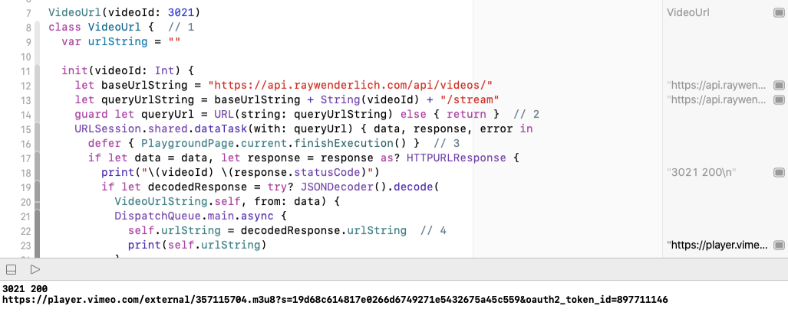
➤ 将VideoURL、结构和扩展复制到Episode playground页面。将init(videoId:)中的defer语句注释掉或删除：
//defer { PlaygroundPage.current.finishExecution() }
你不希望在解码第一个视频URL后停止Playground的执行!
现在一切准备就绪，可以完成对Episode的初始化。
➤ 在Episode扩展中的init(from:)方法的末尾添加以下代码：
self.id = id
self.uri = uri
self.name = name
self.released = DateFormatter.episodeDateFormatter.string( // 1
from: releaseDate)
self.difficulty = difficulty
self.description = description
if let videoId = videoIdentifier { // 2
self.videoURL = VideoURL(videoId: videoId)
}
当你写你自己的解码器初始化器时，你会失去JSONDecoder的自动操作。所以你必须初始化每一个属性，即使你只是给一个属性分配一个解码的值。
有两个属性需要做更多的工作，而不是仅仅给属性分配本地值：
- 你使用
DateFormatter.plisodeDateFormatter将releaseDate日期转换成self.release字符串，你将在EpisodeView中显示。 - 如果你解码了一个
videoIdentifier值，你就用这个值初始化一个VideoURL实例，并将其urlString属性分配给self.videoURLString。
➤ 现在滚动到URLSession的代码，编译器正在抱怨Episode没有成员attributes。将dataTask处理程序的主队列闭包中的所有代码替换为以下内容：
print(decodedResponse.episodes[0].released)
print(decodedResponse.episodes[0].domain)
你打印一些你新解码的属性。
➤ 运行Playground。
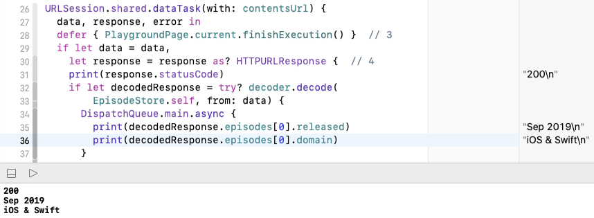
➤ 滚动查看，init(from:)运行了20次：
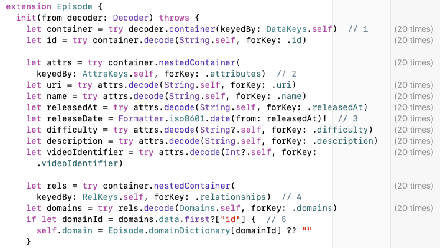
你的JSON解码都在工作，这是你在Playground上所能测试的。你已经准备好将所有这些代码复制并改编到你的应用程序中，使一切都能正常工作!
关键点¶
Playground对于解决代码问题非常有用。你可以快速检查由方法和操作产生的值。URLComponents查询项可以帮助你为REST请求创建URL编码的URLs。- 使用
URLSession dataTask来发送HTTP请求并处理HTTP响应。 - 对嵌套的
JSON值进行解码，可以在你的应用程序的数据模型中反映JSON结构，或者将JSON结构平铺到你的数据模型中。 - 使用日期格式化器，如
ISO8601DateFormatter，将日期字符串转换为Date值。